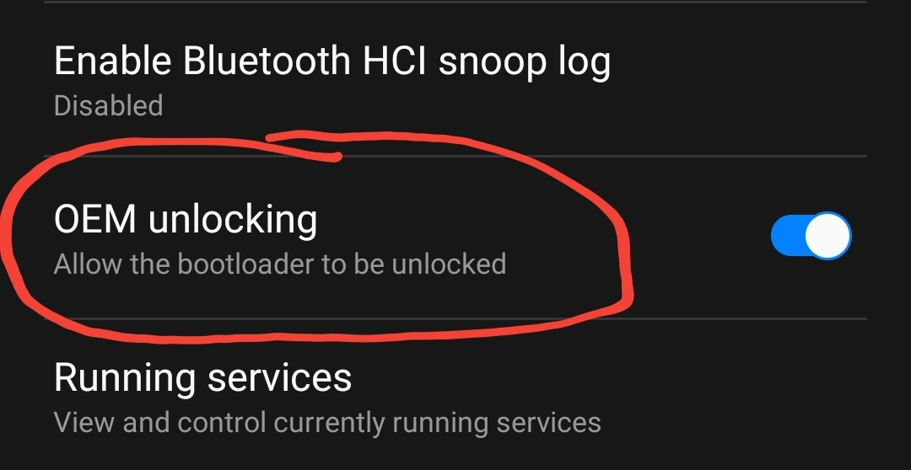
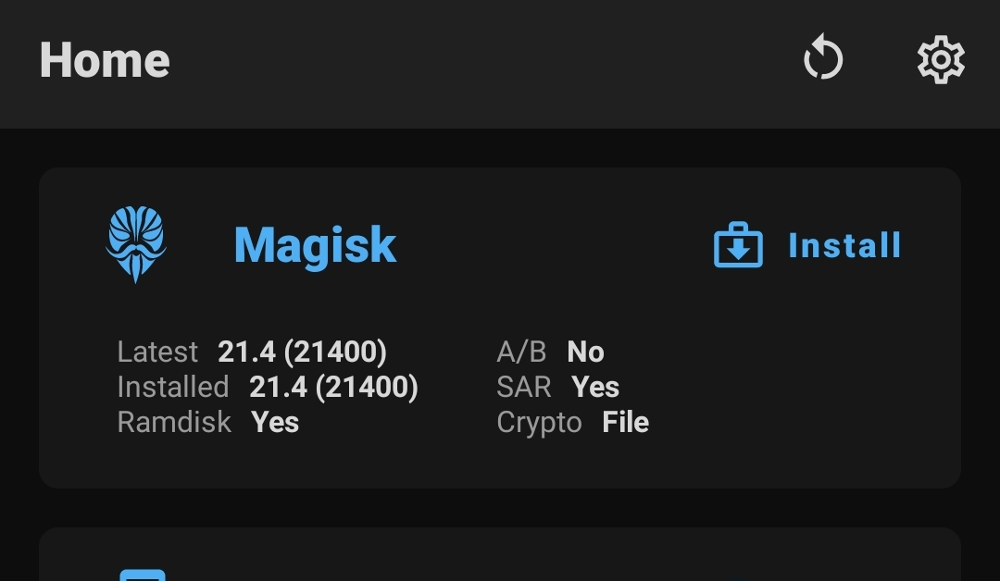

Rooting gives you the advantage of modifying system files and customizing your android phone. Samsung has made it especially easy for their new phones to be rooted. Just note that rooting will void your warranty, reset the phone and trip the knox-counter. Have a backup and don't care? Let's go then (Check prerequisites first!)!
Go to your phone's settings, tap About phone, Software information and tap the build number 7 times. Enter your code/password/pattern and hit ok. If you now back out to the main settings page, you will find a new option called 'Developer options'.
Enter developer options and enable the 'OEM unlocking' option. You will get a message prompt. Click anywhere on the screen.
Download the magsik manager apk and install it. You will get a security warning if you install an APK for the first time. Press Settings, flip the toggle and back out. Hit install to install the apk.
Download magisk managerFirst check your model number under settings >> About phone. (If your model number has a '/DS' you can ignore it). Then go to your firmware downloading website (like samfw.com (no ad/sponsor)) and download the newest firmware for your model number. The download time may vary from 3 minutes to 5 hours depending on the speed of your network.
After the firmware file(s) has/have finished downloading, extract the file that starts with 'AP' using 7-Zip or any other archive software (check prerequisites), right click the boot.img.lz4 file and press 'Add to archive' (If on 7-Zip). Add the file to a .tar file and copy it over to your phone.
Once the file is copied, open magisk manager, press 'Install' under the Magisk section, select 'Select and Patch a File' and select the .tar file we have just made. Lastly, hit 'LET'S GO!' and wait for the file to patch. The patched file will be located in your phone's Download folder. Copy the patched file over to your PC.
Power off your phone. Connect a USB cable to your PC/Laptop. While holding down both of the power buttons connect the other end to your phone. Press and hold volume up for bootloader unlocking. Reboot the device and wait for it to boot up. After that, set it up (without anything we will be resetting it again) and power it off again.
Hold down the volume buttons again and reconnect the charger. This time only press the volume up button. Open Odin (Check prerequisites) and put the patched .tar file we have made before onto the AP slot. Under the options tab, deselect the Auto-reboot option. Start flashing
After the flash completes, hold down the power and volume down buttons. When the screen goes black, quickly press and hold the power and volume up buttons. When the Samsung logo appears and the unlocked bootloader message dissapears release the power button and hold down the volume up button for one more second (This should enter recovery. The combination may vary per device. Just search up your combination if this doesn't work). In recovery select 'Format data/factory reset'. Confirm and reboot your phone.
Set up your phone like normal. You will see a 'Magisk manager' icon on your app screen. Open it and follow the steps.
Your phone is now rooted!
Rooting is not a simple topic. If you have any questions contact me via Email.